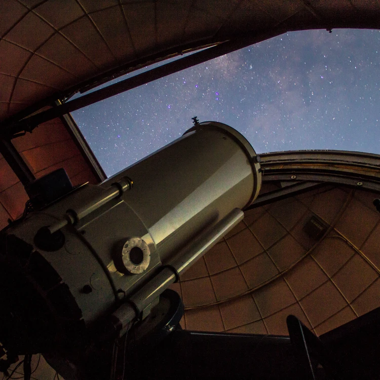
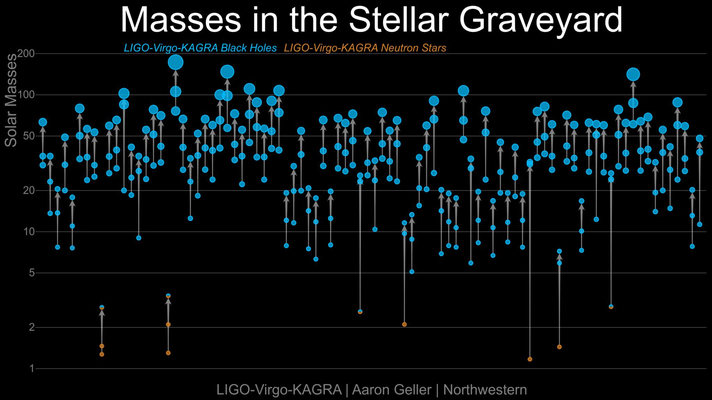

### Ringing Black Hole Bells and Other Exciting Recent Results in Gravitational Wave Astronomy [Will M. Farr](https://farr.github.io) Stony Brook University Center for Computational Astrophysics <br /> <a href="https://github.com/farr/AstroOpenNight20241101"><img src="images/github-mark.svg" height="150" width="150" /></a> <span class="attribution">2024-11-01</span> --- --- I am an astronomer  <span class="attribution"><a href="https://carnegiescience.edu/instrumentation/our-telescopes">Carnegie Observatories</a></span> --- I am an astronomer who uses gravitational waves to learn about black holes (and the universe) <span class="attribution"><a href="https://ligo.org/multimedia/">LIGO</a></span> --- What are gravitational waves? <br /> <span class="attribution"><a href="https://ligo.org/multimedia/">R. Hurt, Caltech</a>; <a href="https://github.com/maxisi/gwpols">Max Isi</a></span> --- <div class="r-stack"> </div> <span class="attribution"><a href="https://ligo.org/multimedia/">LIGO</a></span> --- `$f_{\mathrm{GW},\mathrm{ISCO}} = 200 \, \mathrm{Hz} \frac{10 M_\odot}{M}$` <!-- .element: class="fragment"--> `$h = \mathcal{O}\left(1 \right) \frac{r_\mathrm{Schw}}{r} \simeq 2 \times 10^{-22} \, \frac{M}{10 M_\odot} \, \frac{10 Gpc}{r}$` <!-- .element: class="fragment"--> <span class="attribution"><a href="https://ui.adsabs.harvard.edu/abs/2016PhRvL.116f1102A/abstract">Abbott, et al. (2016)</a></span> --- ## GW150914 <span class="attribution"><a href="https://link.aps.org/doi/10.1103/PhysRevLett.116.061102">Abbott, et al. (2016)</a></span> --- <iframe width="900" height="506" src="https://www.youtube.com/embed/kkKDs59zcdI" title="GW150914: Gravitational waves from LIGO's first detection" frameborder="0" allow="accelerometer; autoplay; clipboard-write; encrypted-media; gyroscope; picture-in-picture; web-share" referrerpolicy="strict-origin-when-cross-origin" allowfullscreen></iframe> <span class="attribution"><a href="https://ligo.org/multimedia/">LIGO / SXS</a></span> --- ## GW170817 <iframe width="891" height="501" src="https://www.youtube.com/embed/-Yt5EmEgz2w" title="Discovery Plot: GRB170817A" frameborder="0" allow="accelerometer; autoplay; clipboard-write; encrypted-media; gyroscope; picture-in-picture; web-share" referrerpolicy="strict-origin-when-cross-origin" allowfullscreen></iframe> <span class="attribution"><a href="https://ligo.org/multimedia/">LIGO</a></span> --- <iframe width="900" height="506" src="https://www.youtube.com/embed/V6cm-0bwJ98" title="Simulation of the neutron star coalescence GW170817" frameborder="0" allow="accelerometer; autoplay; clipboard-write; encrypted-media; gyroscope; picture-in-picture; web-share" referrerpolicy="strict-origin-when-cross-origin" allowfullscreen></iframe> <span class="attribution"><a href="https://ligo.org/multimedia/">LIGO</a></span> --- <span class="attribution"><a href="https://iopscience.iop.org/article/10.3847/2041-8213/aa9059">Soares-Santos, et al. (2017)</a></span> --- <div class="r-stack"> <img src="images/hubble-gw.png" class="fragment" data-fragment-index="0" /> </div> <span class="attribution"><a href="http://www.nature.com/articles/nature24471">Abbott, et al. (2017)</a>; <a href="https://doi.org/10.1073/pnas.15.3.168">Hubble (1929)</a></span> --- By Now, This Is Becoming "Routine"  <span class="attribution"><a href="http://ligo.org/science-summaries/O3bCatalog/">LIGO</a>; <a href="http://arxiv.org/abs/2111.03606">Abbott, et al. (2021)</a></span> --- <a href="https://gracedb.ligo.org/superevents/public/O4/">GraceDB</a> <iframe class="r-stretch" data-src="https://gracedb.ligo.org/superevents/public/O4/" data-preload /> --- # Ringdown --- <iframe width="900" height="506" src="https://www.youtube.com/embed/kkKDs59zcdI" title="GW150914: Gravitational waves from LIGO's first detection" frameborder="0" allow="accelerometer; autoplay; clipboard-write; encrypted-media; gyroscope; picture-in-picture; web-share" referrerpolicy="strict-origin-when-cross-origin" allowfullscreen></iframe> <span class="attribution"><a href="https://ligo.org/multimedia/">LIGO / SXS</a></span> --- Can You Hear The Shape of a Drum? <span class="attribution"><a href="https://mathoverflow.net/questions/227707/can-you-hear-the-shape-of-a-drum-by-choosing-where-to-drum-it">Math Overflow</a></span> --- You *Can* "See" The Shape of an Atom <span class="attribution"><a href="https://en.wikipedia.org/wiki/Fraunhofer_lines">Wikipedia</a></span> --- You *Can* "See" The Shape of an Atom `$$\frac{1}{\lambda} = R_H \left( 1 - \frac{1}{n^2} \right)$$` <span class="attribution"><a href="https://en.wikipedia.org/wiki/Lyman_series">Wikipedia</a></span> --- Can We Hear The Shape of a Black Hole? <span class="attribution"><a href="https://link.aps.org/doi/10.1103/PhysRevLett.116.061102">Abbott, et al. (2016)</a></span> --- <iframe width="900" height="506" src="https://www.youtube.com/embed/kkKDs59zcdI" title="GW150914: Gravitational waves from LIGO's first detection" frameborder="0" allow="accelerometer; autoplay; clipboard-write; encrypted-media; gyroscope; picture-in-picture; web-share" referrerpolicy="strict-origin-when-cross-origin" allowfullscreen></iframe> <span class="attribution"><a href="https://ligo.org/multimedia/">LIGO / SXS</a></span> --- <span class="attribution"><a href="https://link.aps.org/doi/10.1103/PhysRevX.9.041060">Giesler, et al. (2019)</a></span> --- <span class="attribution"><a href="http://arxiv.org/abs/2107.05609">Isi & Farr (2021)</a></span> --- `$$\frac{1}{\lambda} = R_H \left( 1 - \frac{1}{n^2} \right)$$` <span class="attribution"><a href="https://en.wikipedia.org/wiki/Lyman_series">Wikipedia</a></span> --- <span class="attribution"><a href="https://link.aps.org/doi/10.1103/PhysRevLett.123.111102">Isi, et al. (2019)</a>; <a href="https://ringdown.readthedocs.io/en/latest/examples/GW150914.html">ringdown</a></span> --- <span class="attribution"><a href="https://link.aps.org/doi/10.1103/PhysRevLett.123.111102">Isi, et al. (2019)</a></span> --- Not Yet "Routine," But Getting There <span class="attribution"><a href="https://link.aps.org/doi/10.1103/PhysRevD.108.064008">Siegel, Isi, & Farr (2023)</a></span>